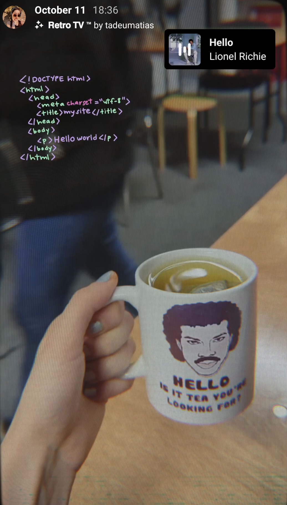

Why FAC?
During my time in your pre-training program, I've been deeply impressed by the positive environment you've cultivated. It's a space where I feel safe and supported, free from judgment based on my background or gender. I'm drawn to join Fac because it fosters a community of like-minded, respectful individuals committed to personal growth and mutual support. I've encountered intelligent, rational, understanding, and compassionate people, making me feel comfortable sharing ideas and solutions. This inclusive environment allows me to express my thoughts, learn from responses, and embrace the privilege of imperfect expression. Fac's values align closely with my own, and I've genuinely enjoyed collaborating within Fac meetings and groups.
